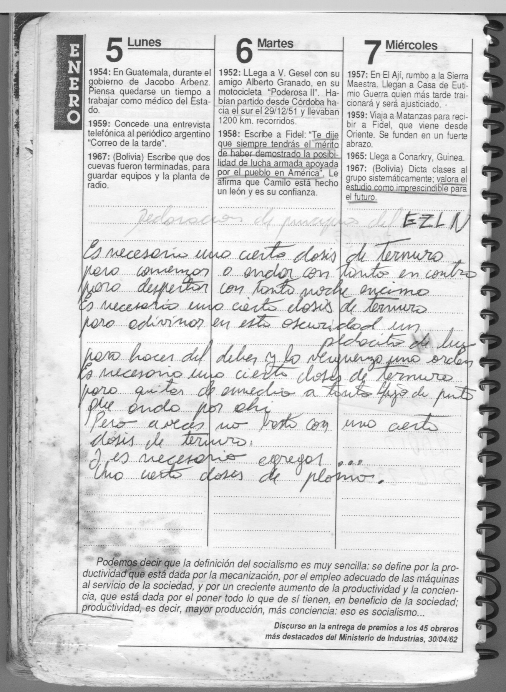

Ver a tamaño completo · escaneo original 1755 × 2399 px
Transcripción
[a lápiz, arriba] Declaración de principios del EZLN
Es necesario una cierta dosis de ternura / para comenzar a andar con tanto en contra / para despertar con tanta noche encima
Es necesario una cierta dosis de ternura / para adivinar en esta oscuridad un pedacito de luz / pero hacer del deber y la vergüenza una orden
Es necesario una cierta dosis de ternura / para quitar de en medio a tanto hijo de puta que anda por ahí
Pero a veces no basta con una cierta dosis de ternura / y es necesario agregar… una cierta dosis de plomo.